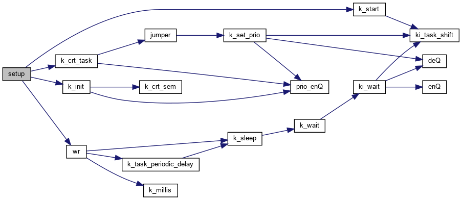
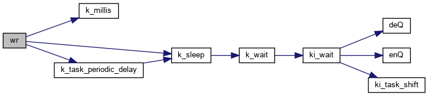

#include <krnl.h>
Include dependency graph for rt-arduino-periodic-delay.ino:

Go to the source code of this file.
Functions | |
| void | wr (void) |
| void | setup () |
| void | loop () |
Function Documentation
◆ loop()
| void loop | ( | ) |
Definition at line 46 of file rt-arduino-periodic-delay.ino.
◆ setup()
| void setup | ( | ) |
Definition at line 34 of file rt-arduino-periodic-delay.ino.
References k_crt_task(), k_init(), k_start(), and wr().
Here is the call graph for this function:

◆ wr()
| void wr | ( | void | ) |
Definition at line 15 of file rt-arduino-periodic-delay.ino.
References i, k_millis(), k_millis_counter, k_sleep(), and k_task_periodic_delay().
Referenced by setup().
Here is the call graph for this function:

Here is the caller graph for this function: